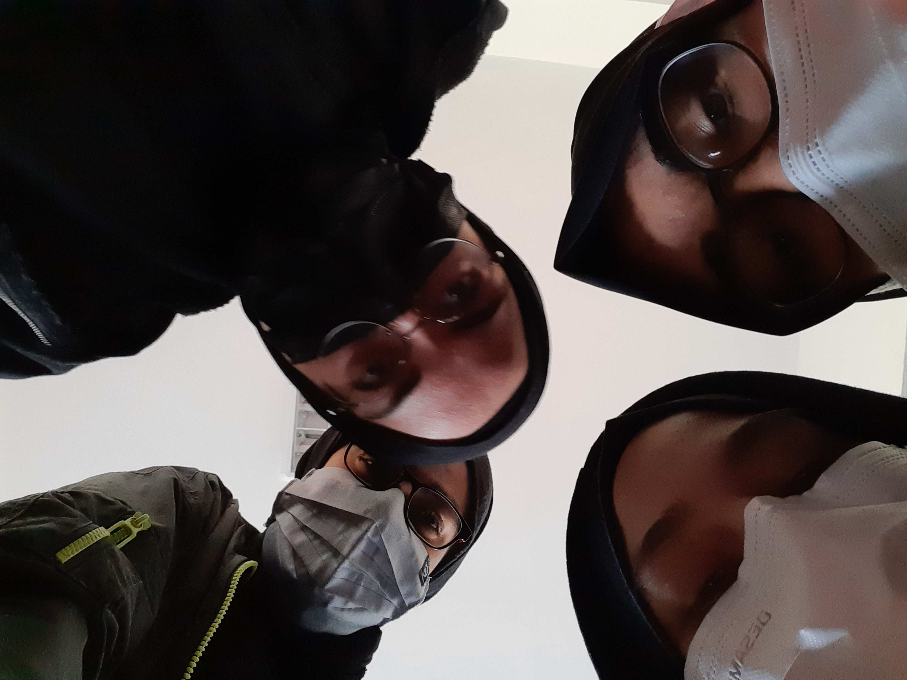

Tanışmak için
Odunpazarı Evleri, Eskişehir'in ilk yerleşim yerini oluşturan Odunpazarı semtindeki Osmanlı Dönemi'nden kalma tarihi evlerdir. Safranbolu, Beypazarı, Göynük gibi yerlerdeki mimari özellik ve motifleri taşırlar. UNESCO dünya mirası listesindedir.
Eskişehir'in Odunpazarı semti kentin güney kesimindeki tepelerin üzerine kurulmuştur. Bademlik denilen bölgeye uzanır.
Bir rivayete göre Eskişehir'e yerleşmeyi düşünen ilk halk Odunpazarı ve şimdiki Porsuk Çayı'nın olduğu bölgeye birer koyun ciğeri asarlar. Hangisi çok dayanırsa orayı yerleşim bölgesi seçeceklerdir. Odunpazarı'na asılan ciğer daha geç bozulur ve ilk yerleşim burada oluşur.
Osmanlı örneklerini koruyan kent, kıvrımlı yolları, çıkmaz sokakları, ahşap süslemeli bitişik düzenli, cumbalı evleri ile örf, adet ve geleneklerini koruyarak bir bütün olarak günümüze kadar gelmiştir.
Frigler’in Midas Anıtı olarak da bilinen Yazılıkaya, Eskişehir’e 80 kilometre uzaklıkta bulunan Han ilçesi sınırları içinde yer almaktadır. Frigler’in Ana Tanrıçaları olan Kybele için yaptıkları 17 metrelik yüksekliğe sahip olan Yazılıkaya, Frigler’in en önemli kült merkezidir.
Milattan önce 8. yüzyılda yapılmış olan bu anıt, Frigler’in gelişen mimarisinin bir doruk noktası olarak, üzerine inşa edildiği kayalarda büyük bir görkemle yer almaktadır. Tanrılarının yamaçlarda yaşadığına inanan Frigler, Yazılıkaya’yı kolay şekil verilebilen tüf kayalarından oluşan bir arazi üzerine kurmuştur. Frigler’in önemli bir dini merkezi olan Yazılıkaya’nın duvarları ise, Kybele için yaptıkları toprak levhalarla süslüdür. Anıtın ortasında ise Kybele’nin heykeli için ayrı bir alan da ayrılmıştır. Ancak bu heykel günümüze dek gelememiştir.
Eskişehir, Türkiye'nin İç Anadolu bölgesinde yer alan bir büyükşehirdir. Nüfusu 2023 yılına göre 915.418'dir. Ortasından Porsuk Çayı geçen şehir, Avrupai tarzdadır. Ayrıca içerisinde Osmangazi Üniversitesi, Eskişehir Teknik Üniversitesi ve Anadolu Üniversitesinin bulunması nedeniyle bir öğrenci kenti görünümündedir. Met helvası, nuga helvası, haşhaşlı çörek, Kalabak suyu, çibörek ve lületaşı ile meşhurdur. Ayrıca balaban kebabı da Eskişehir mutfağında önemli bir yer almaktadır. İşlenebilir lületaşı, Türkiye'de yalnızca Eskişehir'de çıkarıldığı için Eskişehir taşı olarak bilinir. Sanat kurumları ve tesisleri ile kültür ve sanatta gelişmiş bir şehirdir. Eskişehir günümüze kadar değişik uygarlıklar altında varlığını sürdürmüştür. Üzerinde kurulan medeniyetlerden bazıları Frigya, Bizans, Anadolu Selçukluları ve Osmanlı İmparatorluğu'dur. Eskişehir 2013 yılında Türk Dünyası Kültür Başkenti ve UNESCO Somut Olmayan Kültürel Miras Başkentliği unvanlarını taşımaktadır.
Eskişehir kentinin güneybatısında yer alan, Aksu Dağı'nın kuzey yamacından inen Bayatçık Deresi ile Murat Dağı'nın kuzey yamacından inen Kızıltaş Suyu'nun birleşmesiyle doğan Porsuk Çayı, 448 kilometre uzunluğu ile Sakarya nehrinin en uzun koludur. Çayın etrafına inşa edilen yapılar ve sosyal alanlarla birlikte çayda gezen gondollar ve deniz araçları şehrin havasını güzelleştirmektedir
400.000 m2 gibi devasa bir alan üzerinde bulunan Sazova Bilim, Kültür ve Sanat Parkı, Eskişehir'in en bilinen simgelerinden biridir. Türkiye'nin en büyük ve en güzel parkları arasında yer alan parkın içerisinde yapay gölet, su sporları olanakları, Japon bahçesi, bilim merkezleri, müzeler, masal şatosu, hayvanat bahçesi, oyun alanları, su altı dünyası, restoran, kafe gibi pek çok farklı bölüm var.
Eskişehir Havacılık Müzesi, hem çocuklu ailelerin hem de havacılık alanına ilgisi olanların Eskişehir’de mutlaka uğraması gereken yerler arasında. Türk Hava Kurumu ve Türk Silahlı Kuvvetleri’nin kullandığı jet uçaklarından polis helikopterlerine ve tarihi kargo uçaklarına kadar zengin bir koleksiyonu bulunan müzenin bir uçaktan dönüştürülen kafeteryası da görülmeye değer.
Bilgisayar Mühendisi
zey.su.oncu@gmail.com
EĞİTİM
BECERİLER
DİLLER
HOBİLER
|
HAKKIMDAOrtaokulda fark edilen hızlı ve verimli düşünme yeteneğini SERTİFİKALARİngilizce B1 Sertifikası İleri Düzey C++ Sertifikası Excel Kullanım Sertifikası DENEYİMBulunmuyor |
|---|
2004 yılı Haziran ayının 18'ine gelen cuma günü Eskişehir merkezde dünyaya geldim. Ev hanımı bir anne ve serbest meslek çalışan bir babanın çocuğuyum. 2 kardeş olarak çocukluğum ablamla birlikte geçti. Ortaokulda resme olan yeteneğim nedeniyle bir kaç yarışmaya katılma durumum oldu ve yine ortaokulda dövüş sporlarını sevmem nedeniyle kick boksa başladım. Ancak liseye başlamamla bu serüvenim son buldu ve lisede voleybol oynamaya başladım. Okul takımında önce pasör sonra pasör çaprazı mevkilerinde oynadım ve bu serüvenimde pandemi ile birlikte sonlanmak zorunda kaldı.

Beyin yoran yabancı dizileri, aksiyon ve korku filmlerini, suç ve gizem romanlarını çok severim.
İşte en sevdiğim bir kaç dizi, film, roman: